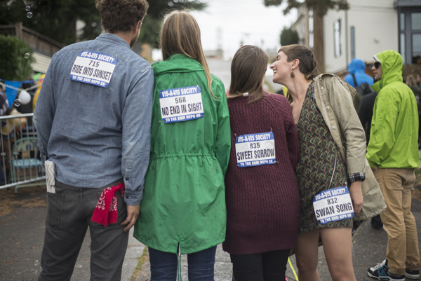

NEPO 5K DON'T RUN 2015 // THE END IS NEPO 
NEPO 5k Don't Run is an annual art walk connecting diverse neighborhoods and audiences. Each year local artists install and perform over 50 projects along the ordinary city streets, in garages, pagodas, in a grass meadow along a bike path, below a bridge and under a freeway underpass. The range of projects spans many artistic disciplines: visual art and sculptural installations, interactive artworks, poetry readings, video projections, sound installations, music and theatrical performances. Every aspect of this walk is a creative happening - a visual and symbolic experiment in creating a more enjoyable world through active participation.